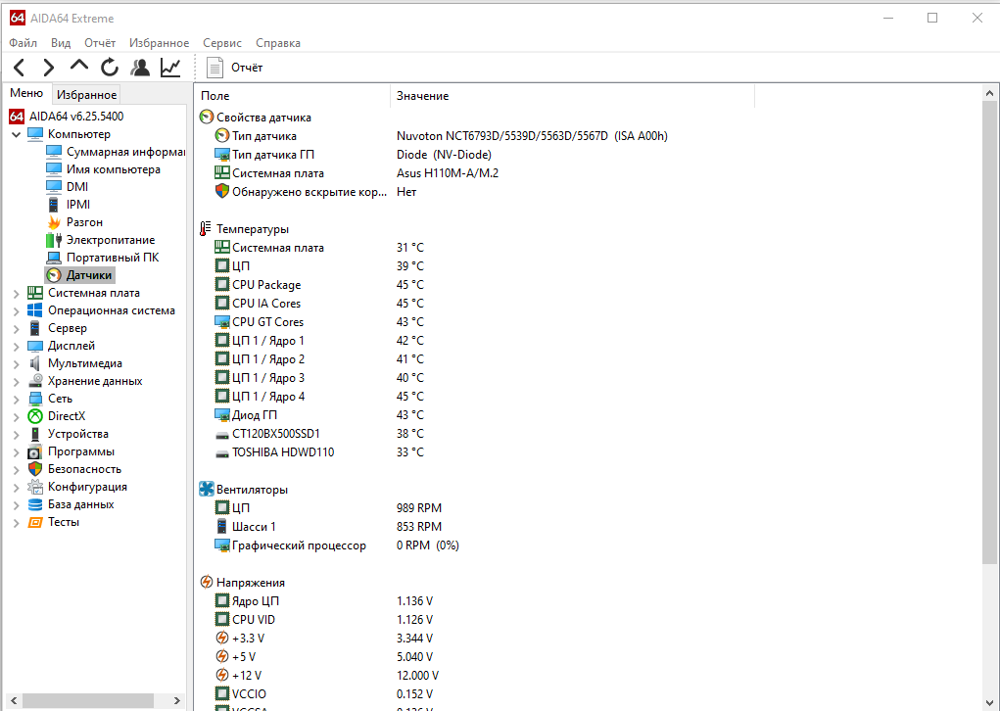

AIDA64 — это комплекс диагностики и тестирования Windows-систем, которая рассчитана на домашних пользователей. Он включает в себя богатую функциональность для детального обзора всех компонентов компьютера (поддержка 150 000 устройств), проверки производительности и стабильности, а также мониторинга ключевых узлов системы. Помимо самого компьютера программа предоставит информацию о внешних устройствах и сети.
Основные возможности:
- Тестирование процессора, памяти и дисков
- Подробная информация об аппаратных компонентах
- Сведения о программных свойствах и обеспечении
- Текущее состояние ПК или ноутбука, сведения о котором предоставляется датчиками
- Стресс-тесты
- Мониторинг температуры, напряжения и вентиляторов
- Диагностика и анализ операционной системы и прикладных программ
Главное меню програмы Aida64 создержит основные разделы системы.
Информация об общей информации о компьютере
В Aida64 можно вывести информацию как по всей системе, так и по отдельным ее компонентам
Программа поддерживает более 250 датчиков, передающих информацию с внутренних устройств. Они отображают температуру ЦП и ГП, напряжение и скорость кулеров.

Тестирование памяти и кэша позволяют проанализировать пропускную способность оперативной памяти и задержки.
Aida64 поддерживает создание отчетов, можно создать отчет по всем разделам системы или выбрать требуемые разделы